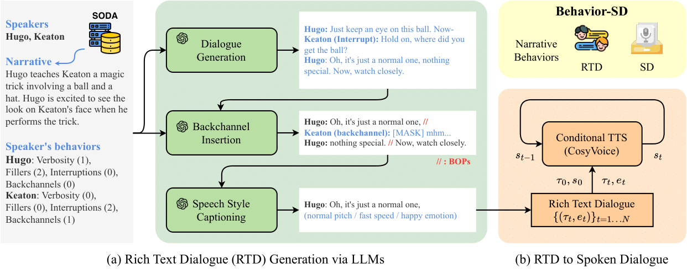
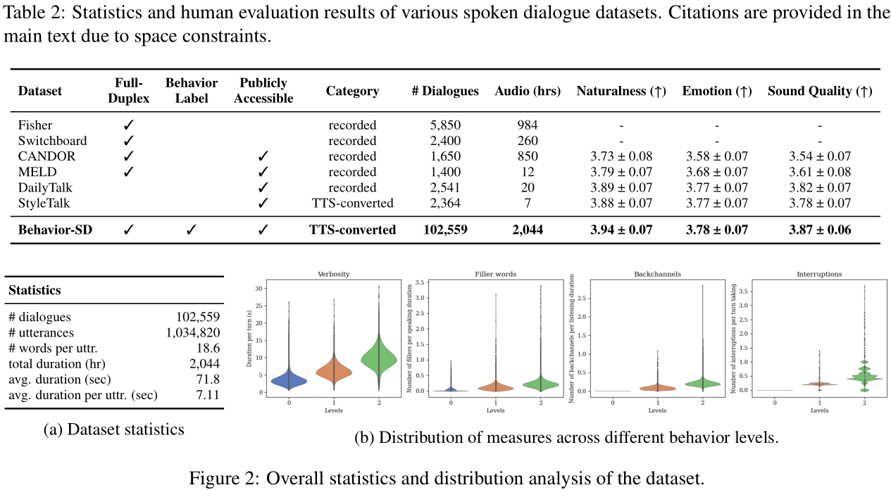

Spoken dialogue systems often struggle with complex conversational behaviors such as turn-taking, interruptions, filler words, and backchannels, which are essential for natural and engaging human interactions. However, existing spoken language models and datasets frequently fail to explicitly model these behavioral traits, leading to less natural and effective communication. To address this challenge, we make two key contributions. First, we introduce Behavior-SD, a large-scale dataset containing over 100K spoken dialogues (2,044 hours) annotated with various conversational behaviors, synthesized via LLMs to model diverse full-duplex interactions. Second, we propose BeDLM, the first dialogue model capable of generating natural conversations conditioned on specific behavioral and narrative contexts, supporting simultaneous contributions from both speakers. Through human evaluations and behavior-adherence metrics, we demonstrate that BeDLM outperforms baseline models in generating natural, coherent, and behaviorally rich dialogues. Our work opens new possibilities for developing behaviorally-aware dialogue systems that more closely mimic human conversational dynamics, enhancing user engagement and communication effectiveness.


Harlan laughed when Sofiya said she was too dependent on her parents. "I don't need them to do everything for me," Harlan said. "I can take care of myself."
Behaviors:
| Speaker | Utterance Length | Filler Words | Backchannels | Interruptions |
|---|---|---|---|---|
| Harlan | 2 | 2 | 2 | 1 |
| Sofiya | 2 | 0 | 2 | 0 |
Sofiya: You know, {Hmm.} I sometimes think I'm too dependent on my parents for everything. {Yeah.} [laughter] {Oh.} It's like I can't do anything without them.
Harlan: [laughter] Oh, Sofiya, I understand what you mean, but really, {Right.} I don't need them to do everything for me. {Okay.} I can take care of myself quite well.
Sofiya: Really? {Yeah.} So you mean, like, you handle all those adult responsibilities on your own {Uh-huh.} without ever turning to them for help?
Harlan: Yeah, exactly. {That's great.} I mean, I handle my own finances, {Oh, really?} make my own meals, and even manage to keep the apartment clean. It's all about, you know, being self-reliant.
Sofiya: That's impressive. But don't you occasionally find yourself in situations where you just need to call them for advice or something?
Harlan: Well, sometimes. I mean, like, sometimes when I have really tough decisions to make... [interrupted]
Sofiya (interrupt): Decisions about your career {Yeah.} or personal life?
Harlan: Yeah, exactly. Especially when it comes to big decisions like that, {I see.} I might reach out just to get their perspective.
Sofiya: That makes sense. I guess it's about finding a balance {Right.} between independence {Yeah.} and knowing when to seek guidance.
Harlan: Precisely. {Okay.} It's not about relying on them for everything. {Mhm.} It's more about, you know, having that support system but still being able to function independently most of the time.
Sofiya: I see what you mean. {Yeah.} Maybe it's something I should strive to achieve myself.
Abbi promises Eamon not to fly because Abbi is afraid of flying.
Behaviors:
| Speaker | Utterance Length | Filler Words | Backchannels | Interruptions |
|---|---|---|---|---|
| Abbi | 1 | 1 | 2 | 0 |
| Eamon | 0 | 0 | 0 | 2 |
Abbi: You know, Eamon, this time I'm definitely not flying. I just, I can't handle [interrupted]
Eamon (interrupt): Heights?
Abbi: Exactly! I get so anxious even thinking about it.
Eamon: It's understandable. {Mhm.} We've talked about other ways to get there, like driving or taking a train.
Abbi: Yeah, and driving isn't bad. Actually, it's quite fun. I was planning on making a road trip out of it. Maybe stop by some places on the way, like [interrupted]
Eamon (interrupt): The national parks?
Abbi: Yes! That would be a perfect break from the drive. And you know what, it's way less stressful.
Eamon: Sounds like a good plan. {Yeah!} Let's make sure to plan those stops then.
Abbi: Definitely. And I already promised myself no flights this time, no matter what. You gotta keep me accountable, okay?
Eamon: Of course, {Great.} I've got your back.
Raechel speaks to Collin's mother in order to get to know her better and to find out more about Collin. Raechel is interested in learning about what kind of person Collin comes from, and she feels that speaking with his mother will give her some insight.
Behaviors:
| Speaker | Utterance Length | Filler Words | Backchannels | Interruptions |
|---|---|---|---|---|
| Raechel | 1 | 0 | 0 | 0 |
| Collin | 2 | 2 | 1 | 1 |
Raechel: Hey Collin, {Hey!} I had a lovely chat with your mom the other day. She's wonderful!
Collin: Oh, that's great to hear! She's, um, always been such an interesting person, full of stories about her childhood and everything. Did she talk about her upbringing?
Raechel: Yeah, she did mention growing up on the farm. I must say, it sounds quite idyllic. [laughter]
Collin:
Raechel: Well, I was really curious about what you were like as a kid. She had some fun stories.
Collin: Oh boy, I bet she told you about all those, um, wild adventures I went on. I was quite a handful!
Raechel: Actually, she did mention your curious nature. She said you were always asking questions about everything and, I guess, [interrupted]
Collin (interrupt): Always getting into trouble for it, for sure! But, like, I think it really helped shape, you know, who I am today.
Raechel: She also mentioned how kind you were, especially to your younger siblings. Why didn't you ever share that? [laughter]
Collin: Well, I guess it's, um, a bit embarrassing, but yeah, I always felt like, you know, I should look out for them. It's just part of being the older brother, right?
Raechel: Absolutely, {Yeah.} and it's admirable. {Thanks.} I enjoyed learning more about you through her stories. {Right.} Your family seems amazing.
Markell was kind enough to invite Moishe to stay the night, even though Moishe was a complete stranger. Markell made sure that Moishe had everything they needed and even offered to make them breakfast in the morning.
Behaviors:
| Speaker | Utterance Length | Filler Words | Backchannels | Interruptions |
|---|---|---|---|---|
| Markell | 0 | 0 | 1 | 2 |
| Moishe | 2 | 2 | 0 | 0 |
Markell: So, do you need anything else to be comfortable tonight?
Moishe: Uh, you know, I think I have everything I need. It's, um, really nice of you to, uh, offer me a place to stay. I didn’t expect, um, such hospitality from someone I just met.
Markell: No problem. Happy to help.
Moishe: Well, uh, in the morning, I usually like, um, a bit of breakfast to start my day. I've heard, uh, it's the most important meal, and I like to make it sort of detailed with eggs, toast, sometimes a bit of, uh [interrupted]
Markell (interrupt): I’ll make us breakfast. Eggs sound good?
Moishe: Yeah, that's great! Thank you. And, uh, if you don't mind me saying, your hospitality reminds me of this friend I used to have who would, uh, always welcome guests warmly, {Oh, really?} always eager to provide, sort of, a complete experience {Hmm} whether it be with food, comfort, or just, you know [interrupted]
Markell (interrupt): Glad to hear that. Rest up.
Moishe: Thanks again, Markell. {You're welcome.} It's, um, really appreciated. I, uh, had a long day and was just thinking of how to unwind with, uh [interrupted]
Markell (interrupt): Coffee or tea for breakfast?
Moishe: Oh, uh, tea would be lovely. Thanks!
Illiana and Jerred got into a fight because Jerred wouldn't let Illiana borrow his car. As punishment, Jerred made Illiana clean his room and do all the chores for a week.
Behaviors:
| Speaker | Utterance Length | Filler Words | Backchannels | Interruptions |
|---|---|---|---|---|
| Illiana | 2 | 2 | 1 | 0 |
| Jerred | 0 | 1 | 0 | 2 |
Illiana: You know, Jerred, I've been thinking, like, that maybe I didn't exactly deserve the whole, um, punishment thing with your car, you know?
Jerred: I mean, it wasn't just about borrowing the car. It's also about trust, Illiana.
Illiana: Right, but I was super careful the last time I borrowed it, and, um, I only needed it for a really quick trip. So, it's like, not a big deal or anything, but [interrupted]
Jerred (interrupt): You were late the last time. {Uh-huh.} That's why it felt risky.
Illiana: I guess. But making me clean your room and do all those chores? It's, like, pretty excessive, don't you think?
Jerred: Well, you learned your lesson, right? That was the point.
Illiana: Yeah, I learned that doing chores isn't exactly fun. But still, I mean, maybe if we, you know, talked it through a bit more, we could figure out a better way [interrupted]
Jerred (interrupt): Like, just asking directly next time, maybe. Communication helps.
Illiana: For sure, I get that. So, next time, I'll just, um, run it by you beforehand, and maybe we could come to some sort of mutual agreement on the whole, you know, borrowing deal without going into punishment territory.
Jerred: Sounds good. Let's just keep things smooth next time.
BibTex Code Here